- 특정 부위를 반복적으로 잡거나 주무름
- 주저앉음, 절뚝거림 또는 부축받아 이동함
- 작업을 중단하거나 주변 직원에게 도움을 요청함
- 동일 작업을 계속하지 못하거나 다친 부위를 보여줌
DAISO SAFETY
무엇을 확인하시겠어요?
필요한 메뉴를 선택해주세요.
사고조사
사고 관리번호
-
정보
CCTV
공유기록
면담
1/4 정보
먼저 사고 접수 정보를 입력해주세요.
사고조사 결과문서와 전송 카드에 들어갈 기본 정보입니다.
필수 정보를 입력하면 다음 단계로 이동할 수 있습니다.
2/4 CCTV
CCTV에 사고 장면이 어떻게 찍혀 있나요?
3/4 공유기록
사고를 보고하거나 공유한 기록이 있나요?
4/4 면담
목격자 면담 내용을 작성해주세요.
사고 대응 매뉴얼
필요한 내용만 검색해서 보거나, 아래 챕터 탭에서 골라 확인하세요.
SAFETY & HEALTH TEAM
직원 사고 발생 시 대응 매뉴얼
사고 발생 시 신속하고 체계적인 대응을 위한 본사·매장 공통 가이드
🎯 목적
사고 발생 시 신속하고 체계적인 상황 보고 및 대응을 통해 피해 확산을 최소화하고, 본사와 매장 간 일원화된 보고체계를 확립합니다.
📍 적용 범위
본사 및 전 매장, 전 부서를 적용 대상으로 하며, 사고 발생 시 일괄적인 보고 및 대응 기준으로 활용합니다.
CHAPTER 01
직원 사고 발생 시 Process
사고 발생부터 사후관리까지, 9단계 대응 프로세스 요약입니다.
1
사고발생
근로자 사고 발생
2
초동 대처
병원 후송 · 진료/치료 및 증상 확인
3
1차 보고
점장/부점장 → 파트장 보고
파트장 → 안전보건팀 사내메신저(팀즈) 공유
안전보건팀 사고내역 통계 관리
4
증빙자료 확보 NEW
CCTV 확보 (사고 정황에 맞게 유동적 구간) → 불명확 시 당일 근무자 전원 목격자 진술 → 필요 시 카톡·팀즈 등 대화 기록까지 확보
→ 하반기 개정 사항 (3단계 확보 가이드) 바로가기5
근로자 면담
파트장 근로자 면담 : 사고유형 선택, 재해 증상 등 확인
6
휴업 신청
재해자 휴업 신청 : 산재, 공상, 출/퇴근 재해, 불인정
7
사고 경위 보고
사고경위서 작성 (수시위험성평가 자동 생성 포함) 및 사업주 보고
8
재발방지대책 수립 및 이행
TBM 활동 등 재발방지 조치
9
사후 관리
사고 원인 수시 점검 등 예방 활동
CHAPTER 02
사고 구분 및 대응 기준
산업재해 보상제도 및 휴업 절차 안내
▣ 재해 발생 시 신청 항목
| 구분 | 내용 | 비고 |
|---|---|---|
| 산재 휴직 | 업무 중 사고·질병 발생 시 신청 | 근로복지공단 산재 접수 후 신청 가능 항목 |
| 업무 외 질병 휴직 | 업무 외 사고·질병 발생 시 신청 | 1인당 연간 최대 2개월 |
| 개인연차 / 계출원(병가) | 휴직이 아닌 1일 단위 휴무 신청 | 회사 내부 규정 적용 |
※ 공통 사항 : 재해발생일은 병원 방문 시 정상근무 처리
▣ 재해 유형별 신청 세부 내용
| 재해 구분 | 내용 | 휴업 신청 가능 항목 | 비고 |
|---|---|---|---|
| 산재 | 업무 중 사고·질병 | 산재휴직 또는 계출원(병가) | 근로복지공단 승인 기준 보상 |
| 출퇴근 재해 | 출퇴근 중 사고 | ||
| 불인정 사고 | 업무 중 사고·질병 (재해자 주장) | 개인연차/계출원(병가) 또는 업무 외 질병 휴직 | 위 동일하나, 당사에서 불인정 사유서 별도 첨부 제출 |
| 공상 | 경미한 부상 및 산재 미신청 | 개인연차/계출원(병가) | ① 2주 이내 치료 가능한 재해만 선택 가능 (의사소견 必) ② 치료를 위한 추가 휴식이 필요 시, 공상 신청 불가 → 산재로 전환 |
▣ 산재 및 공상처리 기준 참고 자료
인사총무본부 총무관리부 안전보건팀 제공 별첨 자료입니다.
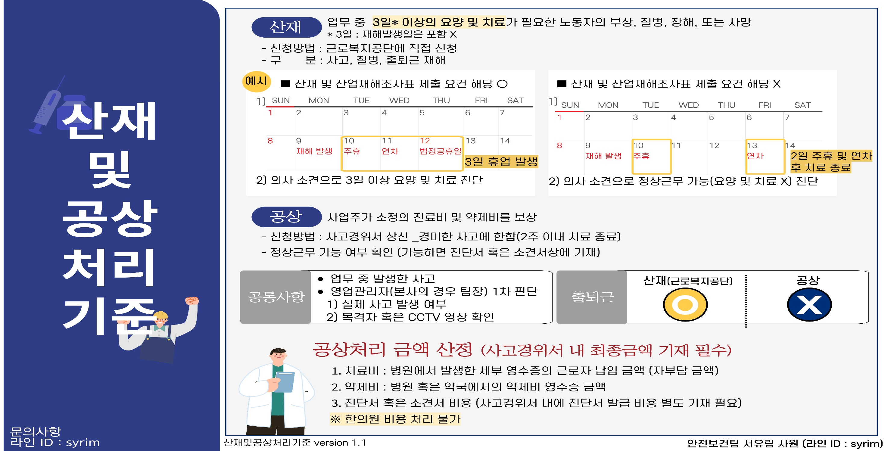
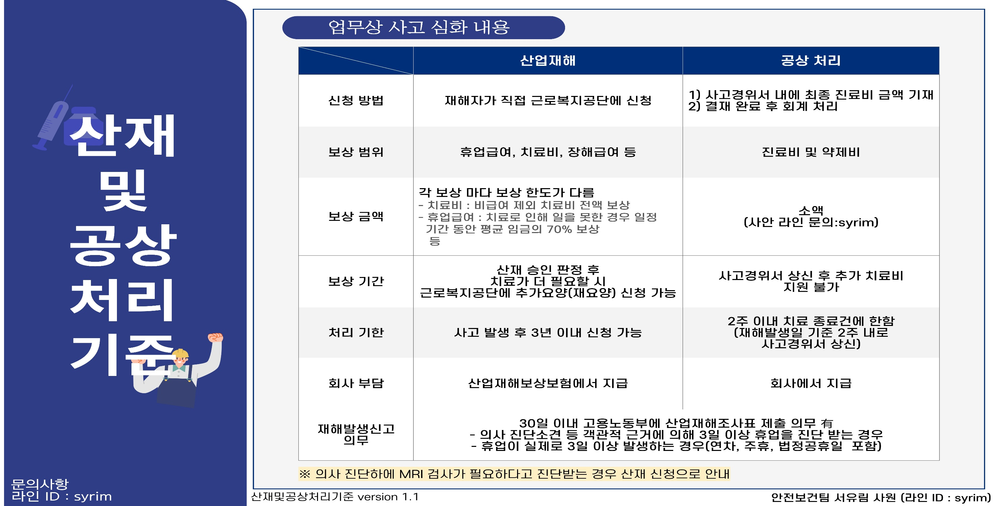
▣ 사고유형별 처리 절차
사고경위서 상신
(산업재해조사표 포함)
(산업재해조사표 포함)
→
결재자 검토 및 승인
(부서/팀장, 안전보건팀, 대표이사 등)
(부서/팀장, 안전보건팀, 대표이사 등)
→
재해자 근로복지공단
산업재해 신청
(재해자 본인 신청)
산업재해 신청
(재해자 본인 신청)
→
안전보건팀 고용노동부
산업재해조사표 상신
(재해발생일 기준 30일 이내)
산업재해조사표 상신
(재해발생일 기준 30일 이내)
→
보험가입자의견서 작성 요청
(공단→재해자·안전보건팀→파트장)
(공단→재해자·안전보건팀→파트장)
→
파트장 작성 후
안전보건팀 전달
안전보건팀 전달
→
안전보건팀 사업주 날인 후
근로복지공단 회신
근로복지공단 회신
→
근로복지공단
승인/불승인 판정
승인/불승인 판정
⏱ 사고 발생 3일 이내 사고경위서 상신
· 3일 이상 휴업 발생 시
사고경위서 상신
(산업재해조사표 포함)
(산업재해조사표 포함)
→
결재자 검토 및 승인
→
안전보건팀 고용노동부
산업재해조사표 상신
(재해발생일 기준 30일 이내)
산업재해조사표 상신
(재해발생일 기준 30일 이내)
· 3일 이상 휴업 발생하지 않을 시
사고경위서 상신
(산업재해조사표 포함)
(산업재해조사표 포함)
→
결재자 검토 및 승인
※ 참고 공상처리는 재해자 의사를 반영해 산재를 원치 않는 경우로, 산업재해조사표 작성 의무는 없으나 추후 산재를 신청하는 경우에 대비해 작성해 둡니다.
대표 사례 : A직원이 공상을 원해 공상처리를 진행했으나, 퇴사 후 별도로 산재를 신청해 2중으로 보상을 받으려 한 사례
✅ 사고경위서 작성 대상
- 회사에서 제공한 교통수단으로 출퇴근하다 재해 발생 (유류비 지원은 제외)
- 회사 관할 구간에서 발생한 사고 (예: 매장에 출근하여 사무실로 이동하는 계단에서 다침)
🚫 사고경위서 작성 불필요
- 회사에서 제공하지 않은 교통수단 이용 중 사고 (대중교통, 자전거, 자차 등)
- 출근길·퇴근길 도중 발생한 사고 (길거리 등 회사 관할 밖)
· 사고경위서 작성 대상인 경우
사고경위서 상신
(산업재해조사표 미포함)
(산업재해조사표 미포함)
→
결재자 검토 및 승인
→
재해자 근로복지공단
산업재해 신청
(재해자 본인 신청)
산업재해 신청
(재해자 본인 신청)
→
보험가입자의견서 등
작성 요청
작성 요청
→
파트장 작성 후
안전보건팀 전달
안전보건팀 전달
→
근로복지공단
승인/불승인 판정
승인/불승인 판정
· 사고경위서 작성 대상이 아닌 경우
해당 내용 안전보건팀 공유
(팀즈 또는 메신저 등)
(팀즈 또는 메신저 등)
사고경위서 작성 없이, 사고 사실만 안전보건팀에 공유하면 됩니다.
사고경위서 상신
(산업재해조사표 포함)
(산업재해조사표 포함)
→
결재자 검토 및 승인
→
재해자 근로복지공단
산업재해 신청
산업재해 신청
→
보험가입자의견서 등
작성 요청
작성 요청
→
파트장 작성 후
(불인정 별지 작성 포함)
안전보건팀 전달
(불인정 별지 작성 포함)
안전보건팀 전달
→
사업주 날인 후
근로복지공단 회신
근로복지공단 회신
→
근로복지공단
승인/불승인 판정
승인/불승인 판정
⏱ 사고 발생 3일 이내
사고경위서 상신
(제출기한 지연 소명서 포함)
(제출기한 지연 소명서 포함)
→
결재자 검토 및 승인
→
안전보건팀 고용노동부
산업재해조사표 및
지연 소명서 상신
(재해발생일 기준 30일 이내)
산업재해조사표 및
지연 소명서 상신
(재해발생일 기준 30일 이내)
⏱ 사고 인지 3일 이내
※ 대표 사례
① 재해자 측 사고 후 보고하지 않고, 퇴사 후 산업재해를 신청한 사례
② 재해자는 점장/부점장에게 보고했지만, 점장/부점장이 파트장에게 보고하지 않은 사례
③ 장기간 업무 수행으로 근골격계 질환이 발병했으나 만성으로 인해 사고로 판단하지 못한 사례
2026년 하반기 개정
⭐ 하반기 산업재해 매뉴얼 개선 사항
근로자 진술만으로 산업재해조사표를 기계적으로 제출하기보다, 사실관계 확인 및 반론 가능한 객관자료를 확보하여 보험가입자 의견서 제출 시 적극 활용합니다.
🔎 왜 개정이 필요한가 (문제의 근본 원인)
지금까지는 CCTV·목격자 진술 등 객관적 증빙자료를 확보하는 절차 자체가 없었습니다. 그 결과 근로복지공단에 보험가입자의견서를 제출할 때 사업주 입장에서 반박하거나 사실관계를 확인할 근거자료가 아무것도 없었고, 결국 근로자가 주장하는 내용을 그대로 받아들여 의견서를 작성해온 것이 반복된 패턴이었습니다.
즉, "증빙자료 미확보 → 반론 근거 없음 → 근로자 주장을 그대로 인정" 이라는 구조적 문제가 있었습니다.
AS-IS (기존)
- CCTV 확보 절차 없음 (사고 인지 후 시간이 지나면 영상 삭제되어 확인 불가)
- 목격자 진술도 형식적으로 1명만 받거나 생략
- 카톡·팀즈 등 대화 기록 확인 절차 없음
- 결과적으로 근로자 진술이 유일한 근거 → 사업주는 반론 불가
- 보험가입자의견서 = 근로자 주장을 그대로 인정하는 형식적 절차
TO-BE (개정 후)
- 재해발생 인지 즉시 CCTV 영상 확보 (이상유무 포착 또는 정상 행동 영상)
- 재해자를 제외한 해당일 출근 근로자 전원의 목격자 진술서 + 출근부 확보
- 점장/부점장에게 공유된 보고 기록(카톡·팀즈·라인 등) 및 구두 소통 내용 확보
- 사업주가 사실관계를 판단할 수 있는 객관자료를 보유
- 보험가입자의견서 = 확보된 근거자료를 토대로 한 실질적 의견 제출
변경 Point 근로자 진술만으로 산업재해조사표를 기계적으로 제출하기보다, 사실관계 확인 및 반론 가능한 객관자료를 확보하여 보험가입자 의견서 제출 시 적극 활용 필요
① 공통 증빙자료 확보 기준
| 구분 | 확보자료 | 핵심 기준 |
|---|---|---|
| 필수 | CCTV 영상 | 사고 판단 불가·영상 없음 시 당일 근무현황 영상에서 이상유무(통증 호소 등) 포착 / 없으면 정상 행동 영상 확보 |
| 필수 | 목격자 진술서 | 재해자 제외 해당일 출근한 근로자 전원 + 출근부 첨부 |
| 필수 | 공유받은 기록 내용 | 재해자 → 점장/부점장 보고 기록 (카톡·팀즈·라인 등) + 구두 보고 시 소통 내용 |
| 초기자료 제외 | 진단서 | 초기 필수자료에서 제외 (지연·불필요한 산재/공상 요구 방지) |
② 재해 유형별 처리 방향
| 재해 유형 | 예시 | 처리 기준 |
|---|---|---|
| 명확한 사고 | 넘어짐·떨어짐 베임·부딫힘 | 근거가 명확할 시 현행 절차 유지 |
| 질병성 사고 (개인지병 or 근골) |
복통·열사병 뇌심혈관 등 방아쇠수근군 허리디스크 등 |
사고경위서 작성 산재신청 전까지 산재조사표 제출 보류 |
| 무리한 동작 호소 | 허리 삐끗 무릎 통증 등 | CCTV·목격자 진술서·공유받은 기록 등 객관자료 확인 후 판단 |
③ 재해발생 사실을 인지한 시점부터 확보할 자료
사고 발생 시 정확한 사실관계 확인과 원활한 사후 대응을 위해, 현장에서 아래 자료가 누락되지 않도록 확보합니다.
① CCTV 영상 확보
사고 영상 판단이 불가하거나 영상이 없는 경우, 그날 당일 근무현황 CCTV 영상을 검토하여 이상유무(통증을 호소하는 장면 등)를 포착한 영상을 첨부합니다.
사고 상황의 영상이 없을 시, 정상적인 행동을 하는 업무 영상을 수집합니다.
예 : 근로자가 허리가 삐끗하였다고 보고했으나, 근무 영상에는 정상적으로 진열 또는 보행하는 영상을 수집
※ 향후 보험가입자의견서 제출 시 사실관계 확인자료로 활용되므로, 영상의 날짜·시간이 확인되도록 저장 (용량이 큰 경우 휴대폰 촬영 영상도 가능)
② 목격자 진술서 확보
사고 당일 재해자를 제외한 해당 매장 근로자 중 출근한 전원의 목격자 진술서를 확보합니다 (해당일 출근부 첨부).
목격한 사실과 재해자의 재해사실에 관한 진술 내용이 있는지/없는지를 확인하기 위함입니다.
③ 공유받은 기록 내용 확보
재해자와의 면담 내용을 점장/부점장에게 카톡·팀즈·라인방 등으로 재해사실을 공유한 기록 여부를 확보합니다.
최초 보고받는 자는 파트장/팀장/부서장 단위보다 직상위자(점장/부점장)이므로 해당 재해사실 확보가 필요합니다.
유선 또는 구두로 보고받은 점장이 파트장에게 재해사실을 연락한 소통 내용도 함께 확보합니다.
위 자료들은 재해자의 주장을 부정하기 위한 목적이 아니라, 사고 발생 당시의 사실관계를 객관적으로 확인하기 위한 자료입니다. 향후 산재 신청 또는 보험가입자의견서 제출 시, 확보된 자료를 바탕으로 사고 경위와 사실관계를 명확히 설명할 수 있습니다.
CHAPTER 03
사고경위서 및 첨부파일 작성 Guide
2026년 4월, 사고경위서 작성 프로세스가 HR 시스템 기반으로 전면 개편되었습니다.
핵심 변화 포인트 "수기·포탈 입력 → HR 기반 자동화로 전환" (중복 입력 제거 + 처리속도 개선)
▣ 개정 개요
기존에는 매장에서 산업재해조사표·수시위험성평가·공유서명록 등을 개별 수기로 작성한 후 전자결재로 상신하고, 최종 결재 완료 후 안전보건팀이 산업재해조사표를 제출하는 방식으로 운영되었습니다. 사고 발생 초기부터 다수의 서류를 수작업으로 작성해야 해 현장·관리자의 업무 부담이 컸습니다.
이에 따라 산업재해 보고 및 제출 프로세스를 전산화·표준화하여, 사고 초기 대응부터 제출 완료까지 HR 시스템으로 일원화했습니다.
변경 전 (AS-IS)
- 매장 → 포탈 중심 수기 + 직접 입력 방식
- 사고 발생 시 위험성평가, 조사표, 공유서명 등 개별 작성
- 근태/인적사항 등 중복 입력 발생
- 자료 취합 및 결재까지 수작업 + 단계별 전달 (시간 지연)
- 결재 완료까지 3~5일, 제출까지 7~14일 소요
변경 후 (TO-BE)
- HR 시스템 기반으로 전환
- 근태 / 개인정보 / 조직정보 → 자동 연동 (입력 제거)
- 사고 입력만 하면 관련 정보 자동 불러오기
- 작성 - 결재 - 제출까지 일원화된 전산 프로세스
- 결재 완료까지 1~2일로 단축
▣ 사고경위서 작성 방법 (HR 시스템)
- HR 시스템 내 상단 안전보건 > 사고보고-사고경위서 작성 선택
- 생성된 페이지 우측 신규 신청 선택
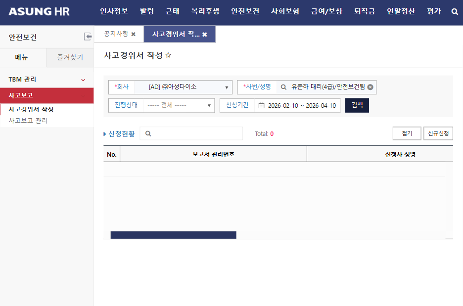
- 매장명 및 성명 — 검색/선택
- 근로자수 — 매장 내 상시근로자 수 작성
- 소재지 — 매장 주소 작성
- 같은 종류 업무 근속기간 — 확인 불가 시 "1개월"로 작성
- 상해종류 및 상해부위 — 진단서 내용을 첨부하는 것이 원칙이나, 진단서 미첨부 시 대략적으로 작성 가능
예) 매장 이동 중 박스에 걸려 넘어져 발목에 통증 발생 → 상해종류 : 염좌 혹은 통증 / 상해부위 : 발목 - 휴업예상 — 실제 휴업일 작성 (휴업 미발생 시 "0" 기재)
★ 위 사항 미작성 시 결재 불가 (필수항목)
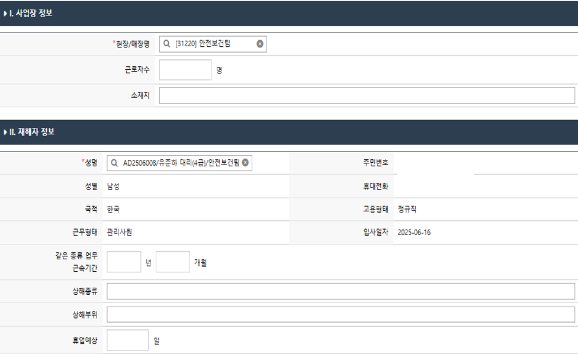
- 사고 발생 경위 — 재해 사실 그대로 작성
- 발생원인 및 방지대책 — 작성 자료는 수시위험성평가 자료로 자동 입력됨 (수정 가능하며, 등급 작성 필요)
- 작성 후 임시저장(必) — 임시저장을 하면 안전보건팀에서 재해조사표를 사전 제출할 수 있음
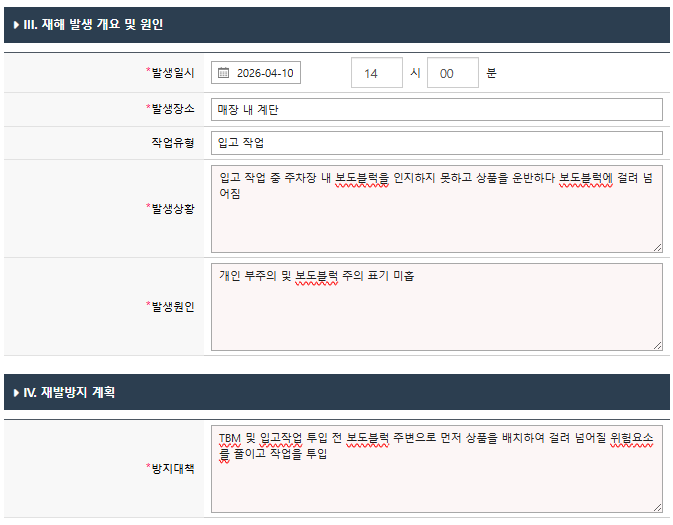
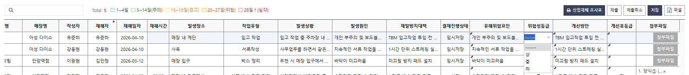
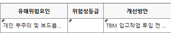
▣ 변경 전 / 후 비교
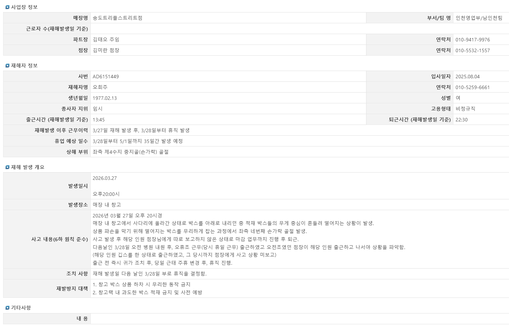
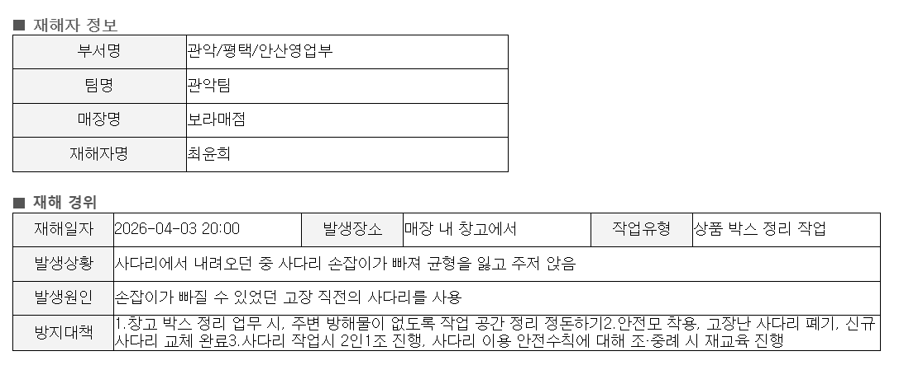
▣ 보고현황 관리
HR 시스템 내 상단 안전보건 > 사고보고관리 선택 시, 작성된 사고 자료를 확인할 수 있습니다.
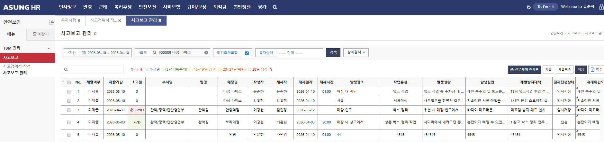
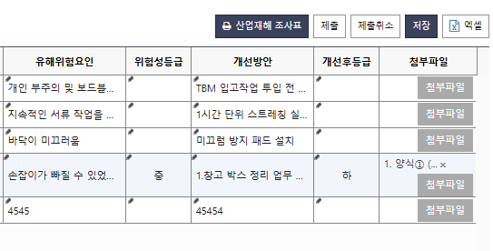
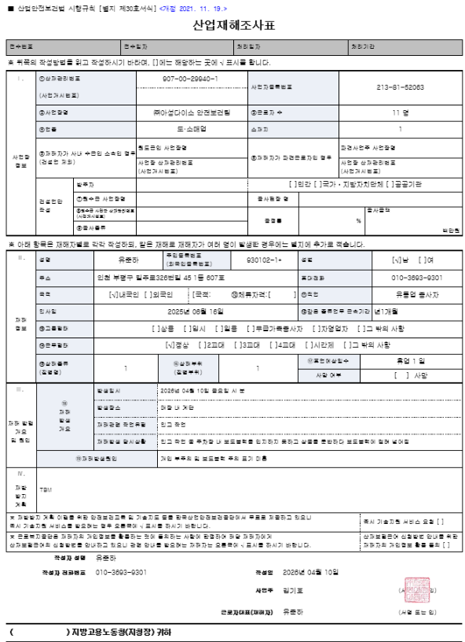
CHAPTER 04
수시 위험성평가 작성 Guide
법적 근거 산업안전보건법 제36조(위험성평가의 실시) 및 시행규칙 제37조(위험성평가 실시 내용 및 결과의 기록·보존)에 의거하여 최초, 수시, 정기 위험성평가를 실시합니다.
목적 사업장 내에서 사업주와 근로자가 함께 산업재해가 발생할 수 있는 유해·위험요인을 찾아내어 누구도 다치지 않도록 하는 것
| 구분 | 내용 | 실행 시기 |
|---|---|---|
| 최초 평가 | 매장 신규 오픈 시 최초 시행 | 오픈일로부터 3개월 이내 |
| 수시 평가 | 산업재해, 리뉴얼 등 시에 시행 | 산업재해 발생 후 / 리뉴얼 전 |
| 정기 평가 | 정기적으로 유해위험요인 파악 및 위험성 결정, 개선 실시 | 연 2회 이상 |
2026년 개정 사항 수시 위험성평가는 이제 HR 시스템에서 사고경위서 작성과 동시에 자동 생성됩니다 (챕터 03 STEP 3 참고). 6단계 수기 작성 절차는 사라졌으며, 남은 실무는 결과 공유 및 서명 확보입니다.
▣ 수시 위험성평가 : 언제 · 어떻게
언제
사고경위서 작성(STEP 3) 시 자동 생성
어떻게
발생원인·방지대책 작성 내용이 위험성평가 자료로 자동 입력, 등급 확인·수정
▣ 자동 생성 이후 진행 사항 — 결과 공유 및 서명 확보
| 순서 | 내용 | 비고 |
|---|---|---|
| 자동 생성 | 사고경위서 STEP 3 작성 시 유해·위험요인 파악, 위험성 결정, 감소대책까지 자동 입력 | 등급 확인·수정 |
| 결과 공유 | 생성된 위험성평가 결과를 매장 전직원에게 공유 | 사고경위서에 첨부되는 서명록으로 확인 |
| 서명 확보 | 공유받은 전직원의 서명을 받아 서명록 완성 | 사고경위서 첨부파일 필수 항목 |
▣ 수시 위험성평가 흐름도 (2026 개정)
산재 발생
→
응급 처치
피해 정도에 따라 현장 처치 또는 병원 후송
피해 정도에 따라 현장 처치 또는 병원 후송
→
사고경위서 작성
(위험성평가 자동 생성)
(위험성평가 자동 생성)
→
매장 소속 직원 공유
→
서명록 확보 및 첨부
CHAPTER 05
사고에 대한 예방 관리
개인부주의가 주요 원인으로 발생 → 사전예방을 최우선으로
당사는 개인 부주의 성향이 확인되어, 사전예방(작업 전 점검·위험 제거·현장 참여)이 재해 감소의 핵심입니다.
▣ 안전 습관화 : TBM (Tool Box Meeting / 위험예지훈련)
TBM 정의
작업 시작 전 또는 작업 중 조·중례 시간에 관리자(조장, 매니저 등)를 중심으로 근무자들이 모여 당일 작업 내용과 안전작업절차, 위험요소/주의사항을 공유하고 핵심 구호를 외쳐 안전을 숙지하고 직접 참여하는 활동
TBM 목적
반복적인 메시지 전달 → 근무자 위험요인 인식 및 대처능력 향상 → 사고 및 중대재해 예방
TBM 핵심 요소
- 참여와 소통 — 일방적 전달이 아닌, 모두가 의견을 나누고 참여하여 현장 위험 요소를 찾아낸다
- 현장 중심 소통 — 위험을 현실적으로 다루고, 작업자들이 스스로 해결책을 찾도록 권한다
- 지속적인 실천 — 일회성으로 그치지 않으며, 매일 반복적으로 습관으로 정착시킨다
▣ 작업 전 예방관리
작업장 내 통행로 확보
교통사고는 도로상에서만 일어나는 것이 아니고, 지게차·구내 운반차·화물자동차 등 차량계 하역 운반기계로 하는 작업이 많은 공장·사업장 내에서도 발생하기 쉽습니다. 작업자와 운반기계가 교행하지 않도록 별도의 통로를 만들고, 해당 통로에 안전표시를 명시해야 합니다.
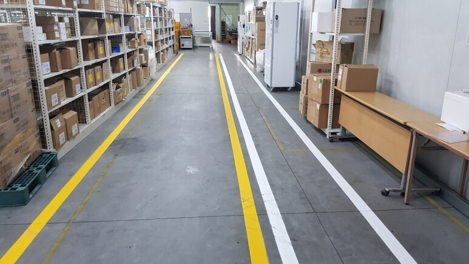
작업장 정리정돈
- 근로자가 작업장에서 넘어지거나 미끄러지는 등의 위험이 없도록 작업장 바닥 등을 안전하고 청결한 상태로 유지
- 제품, 자재, 부재 등이 넘어지지 않도록 붙들어 지탱하게 하는 등 안전조치
- 근로자가 작업하는 장소를 항상 청결하게 유지관리하며, 폐기물은 정해진 장소에만 버림
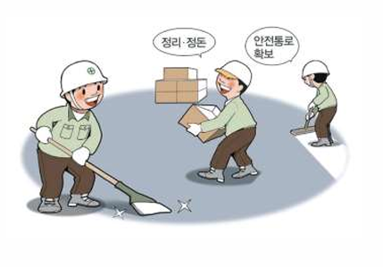
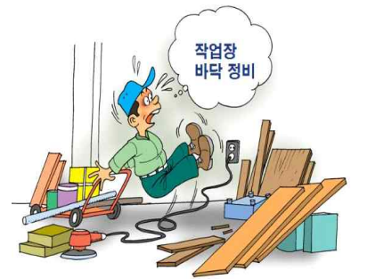
전기 기계·기구 취급 예방 조치
- 분전반의 덮개를 열어 놓은 채 두지 않기
- 분전반 주변에 물건을 놓지 않기
- 정전 시 또는 문제 발생 시 지정된 인원 외 조작 금지
- 콘센트 사용 시 과전류 방지를 위해 문어발식 배선 금지
- 콘센트 손상 유무 확인 시 즉시 교체
- 어린이 감전사고 예방을 위해 콘센트 덮개 설치
- 젖은 손으로 플러그나 스위치를 잡지 않기
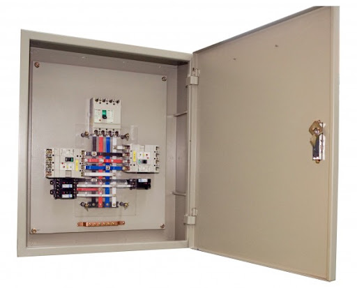
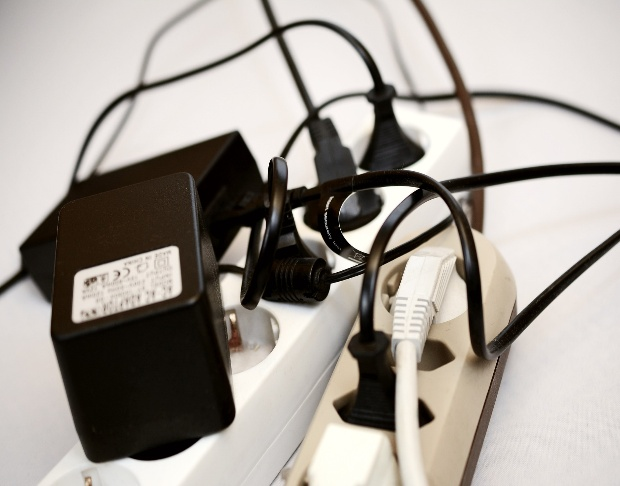
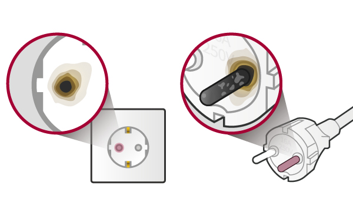
근골격계질환·요통 예방을 위한 중량물 취급 관리
운반작업 주요 재해
- 화물 사이에 손을 넣음
- 화물을 발 위에 떨어뜨림
- 화물에 신경을 쓰느라 주의가 분산되어 운반구 등에 부딪히거나 중심을 잃어 넘어짐
하역작업 주요 재해
- 화물이 떨어지거나 무너져 내림
- 화물을 쌓을 때 손이나 발이 끼임
- 화물을 들어올릴 때 무리한 힘을 가하거나 자세 불량으로 허리를 다침
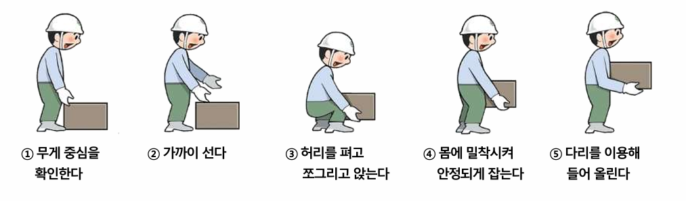
▣ 당사 작업 전 예방관리(안전점검) 예시
| 구분 | 점검 내용 |
|---|---|
| 1 | 비상구 및 피난통로 주변 물건을 적재하지 않도록 관리하였는가? |
| 2 | 사다리 및 작업도구 파손 상태 유무를 확인하였는가? |
| 3 | 전기, 멀티콘센트 외관 상태를 확인하였는가? |
| 4 | 전열기구(여름: 냉방, 겨울: 난방) 관리 상태를 확인하였는가? |
| 5 | 소화기 및 소방시설물 상태를 확인하였는가? |
| 6 | 작업장 통로 확보 상태를 확인하였는가? |
| 7 | 위험 작업(사다리) 전 개인보호구 착용을 확인하였는가? 혹은 비치/관리 상태를 확인하였는가? |
| 8 | 진열대 주변 낙하물 방지 상태 유무를 확인하였는가? |
| 9 | 공용시설(계단, E/S, E/V) 상태를 확인하였는가? |
| 10 | 근로자의 건강상태 유무를 확인하였는가? |
| 구분 | 점검 내용 |
|---|---|
| 1 | 비상구 및 피난통로 주변 물건을 적재하지 않도록 관리하였는가? |
| 2 | 컴퓨터, OA기기 전원(사용 전·후) 상태를 확인하였는가? |
| 3 | 전자기기, 보조배터리 상태를 확인하였는가? |
| 4 | 전열기구(여름: 냉방, 겨울: 난방) 관리 상태를 확인하였는가? |
| 5 | 소화기 및 소방시설물 상태를 확인하였는가? |
| 6 | L카 등 물건 운반 시 통로 확보 상태를 확인하였는가? |
| 7 | 보행통로 내 전선 등 걸려 넘어질 위험요인을 확인하였는가? |
| 8 | 불안전한 자세로 컴퓨터 사무업무를 진행하지 않도록 관리하고 있는가? |
| 9 | 의자 및 책상의 상태는 안전한가? |
| 10 | 계단 이용 시 넘어질 위험에 대한 인지 표지가 붙어있는가? |
CHAPTER 06
자주 묻는 질문 (FAQ)
총 28개 질문을 검색하거나 아래에서 바로 확인하세요.
궁금한 내용 검색
키워드를 입력하면 관련 질문과 답변을 바로 찾아드립니다. (동의어 검색 지원)
검색어를 입력하거나 위 태그를 눌러보세요.